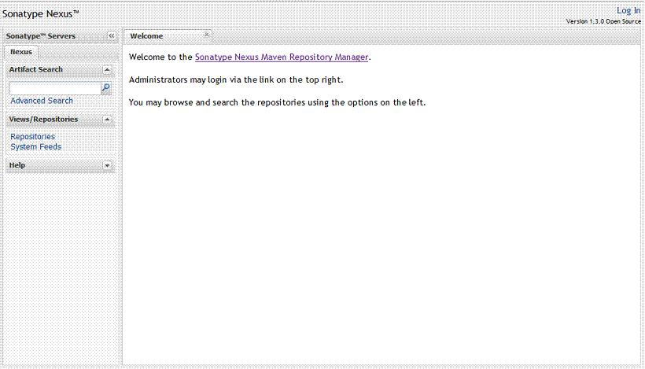
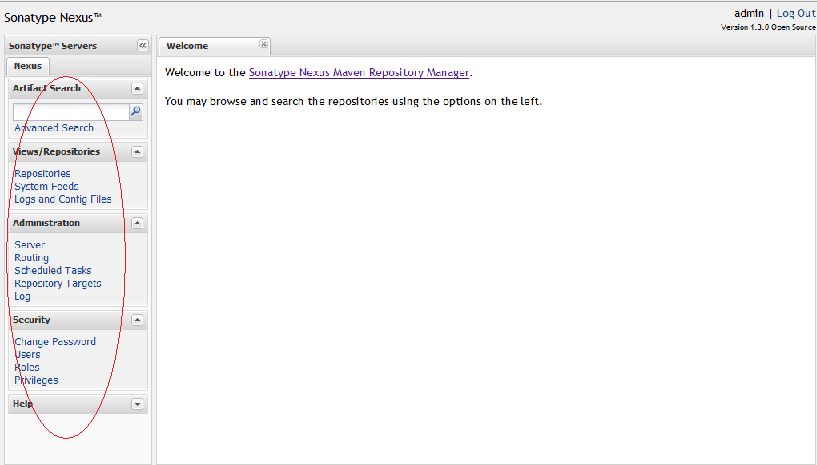
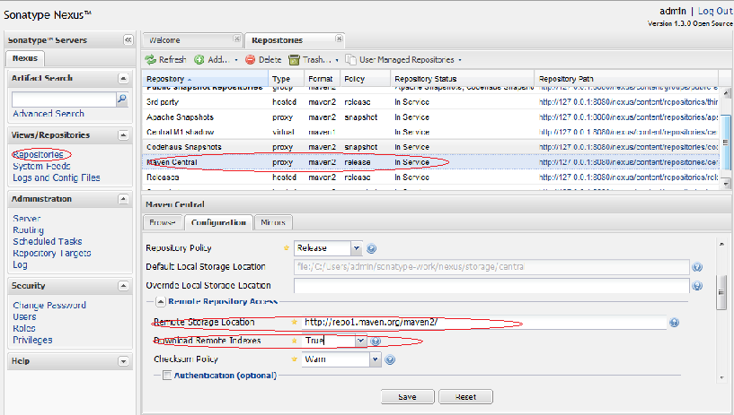
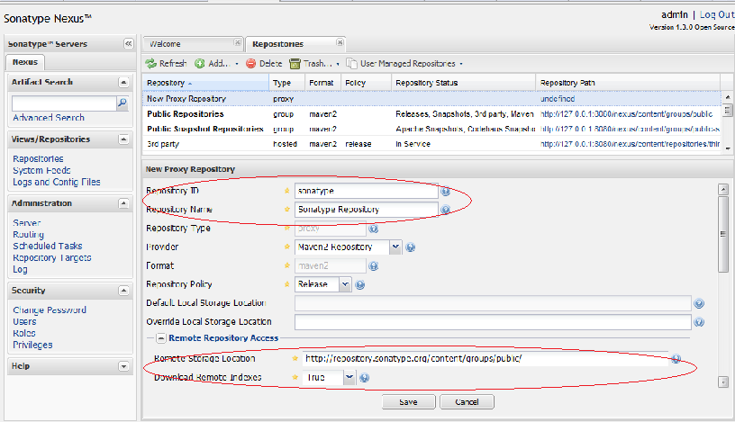
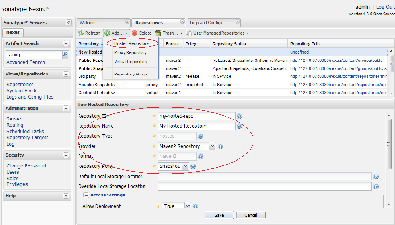
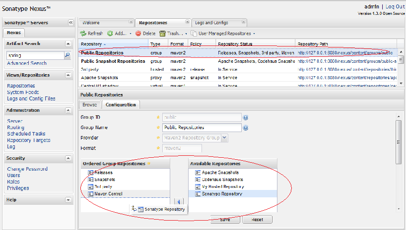
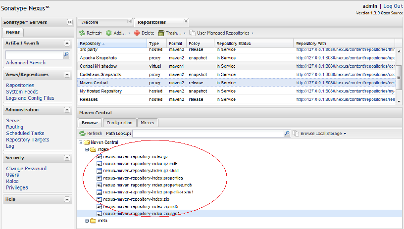
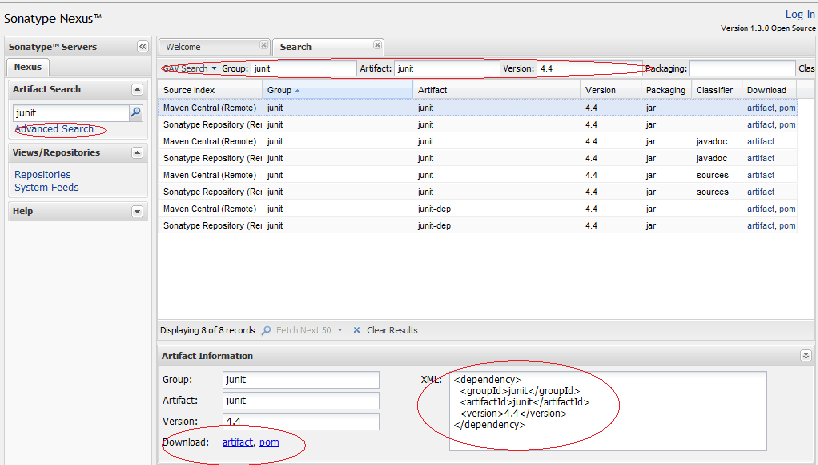
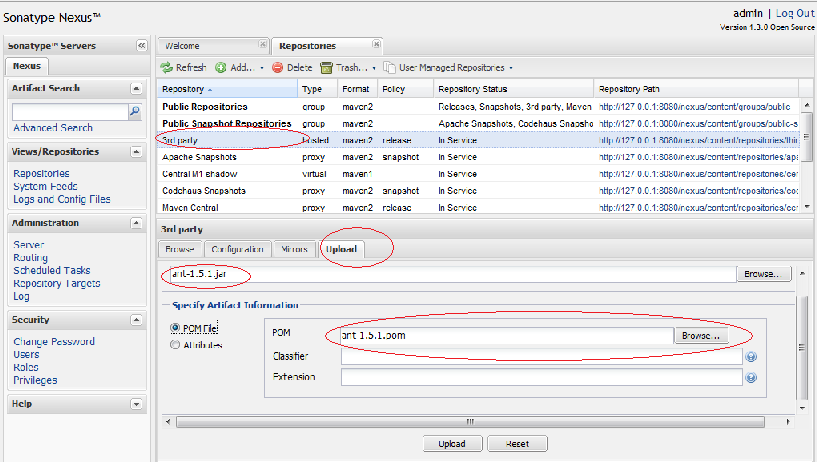

Nexus 是Maven仓库管理器，如果你使用Maven，你可以从Maven中央仓库 下载所需要的构件（artifact），但这通常不是一个好的做法，你应该在本地架设一个Maven仓库服务器，在代理远程仓库的同时维护本地仓库，以节省带宽和时间，Nexus就可以满足这样的需要。此外，他还提供了强大的仓库管理功能，构件搜索功能，它基于REST，友好的UI是一个extjs的REST客户端，它占用较少的内存，基于简单文件系统而非数据库。这些优点使其日趋成为最流行的Maven仓库管理器。
你可以从http://nexus.sonatype.org/downloads/ 下载最新版本的Nexus，笔者使用的是1.3.0版本。
Nexus提供了两种安装方式，一种是内嵌Jetty的bundle，只要你有JRE就能直接运行。第二种方式是WAR，你只须简单的将其发布到web容器中即可使用。
解压nexus-webapp-1.3.0-bundle.zip 至任意目录，如D:\dev_tools ，然后打开CMD，cd至目录D:\dev_tools\nexus-webapp-1.3.0\bin\jsw\windows-x86-32 ，运行Nexus.bat 。你会看到Nexus的启动日志，当你看到“Started SelectChannelConnector@0.0.0.0:8081”之后，说明Nexus启动成功了，然后打开浏览器，访问http://127.0.0.1:8081/nexus，你会看到如下的页面：

要停止Nexus，Ctrl+C即可，此外InstallNexus.bat可以用来将Nexus安装成一个windows服务，其余的脚本则对应了启动，停止，暂停，恢复，卸载Nexus服务。
你需要有一个能运行的web容器，这里以Tomcat为例，加入Tomcat的安装目录位于D:\dev_tools\apache-tomcat-6.0.18 ，首先我们将下载的nexus-webapp-1.3.0.war 重命名为nexus.war ，然后复制到D:\dev_tools\apache-tomcat-6.0.18\webapps\nexus.war ，然后启动CMD，cd到D:\dev_tools\apache-tomcat-6.0.18\bin\ 目录，运行startup.bat 。一切OK，现在可以打开浏览器访问http://127.0.0.1:8080/nexus，你会得到和上图一样的界面。
要管理Nexus，你首先需要以管理员身份登陆，点击界面右上角的login，输入默认的登录名和密码：admin/admin123，登陆成功后，你会看到左边的导航栏增加了很多内容：

这里，可以管理仓库，配置Nexus系统，管理任务，管理用户，角色，权限，查看系统的RSS源，管理及查看系统日志，等等。你会看到Nexus的功能十分丰富和强大，本文，笔者只介绍一些最基本的管理和操作。
点击左边导航栏的Repositories，界面的主面板会显示所有一个所有仓库及仓库组的列表，你会看到它们的Type字段的值有group，hosted，proxy，virtual。这里我们不关心virtual，只介绍下另外三种类型：
由此我们知道，我们需要配置一个Maven中央仓库的proxy，其实Nexus已经内置了Maven Central，但我们需要做一些配置。点击仓库列表中的Maven Central，你会注意到它的Policy是release，这说明它不会代理远程仓库的snapshot构件，这是有原因的，远程仓库的snapshot版本构件不稳定且不受你控制，使用这样的构件含有潜在的风险。然后我们发现主面板下方有三个Tab，分别为Browse，Configuration和Mirrors，我们点击Configuration进行配置，你现在需要关心的是两个配置项：“Remote Storage Location”为远程仓库的地址，对于Maven Central来说是http://repo1.maven.org/maven2/；“Download Remote Indexes”顾名思义是指是否下载远程索引文件，Maven Central的该字段默认为False，这是为了防止大量Nexus无意识的去消耗中央仓库的带宽（中央仓库有大量的构件，其索引文件也很大）。这里我们需要将其设置为True，然后点击Save。在Nexus下载的中央仓库索引文件之后，我们就可以在本地搜索中央仓库的所有构件。下图展示了我们刚才所涉及的配置：

这里我们再举一个例子，我们想要代理Sonatype的公共仓库，其地址为：http://repository.sonatype.org/content/groups/public/。步骤如下，在Repositories面板的上方，点击Add，然后选择Proxy Repository，在下方的配置部分，我们填写如下的信息：Repository ID - sonatype；Repository Name - Sonatype Repository；Remote Storage Location - http://repository.sonatype.org/content/groups/public/。其余的保持默认值，需要注意的是Repository Policy，我们不想代理snapshot构件，原因前面已经描述。然后点击Save。配置页面如下：

Nexus预定义了3个本地仓库，分别为Releases，Snapshots，和3rd Party。这三个仓库都有各自明确的目的。Releases用于部署我们自己的release构件，Snapshots用于部署我们自己的snapshot构件，而3rd Party用于部署第三方构件，有些构件如Oracle的JDBC驱动，我们不能从公共仓库下载到，我们就需要将其部署到自己的仓库中。
当然你也可以创建自己的本地仓库，步骤和创建代理仓库类似，点击Repository面板上方的Add按钮，然后选择Hosted Repository，然后在下方的配置面板中输入id和name，注意这里我们不再需要填写远程仓库地址，Repository Type则为不可修改的hosted，而关于Repository Policy，你可以根据自己的需要选择Release或者Snapshot，如图：

Nexus中仓库组的概念是Maven没有的，在Maven看来，不管你是hosted也好，proxy也好，或者group也好，对我都是一样的，我只管根据groupId，artifactId，version等信息向你要构件。为了方便Maven的配置，Nexus能够将多个仓库，hosted或者proxy合并成一个group，这样，Maven只需要依赖于一个group，便能使用所有该group包含的仓库的内容。
Nexus预定义了“Public Repositories”和“Public Snapshot Repositories”两个仓库组，前者默认合并所有预定义的Release仓库，后者默认合并所有预定义的Snapshot仓库。我们在本文前面的部分创建了一个名为“Sonatype Repository”的仓库，现在将其合并到“Public Repositories”中。
点击仓库列表中的“Public Repositories”，然后选择下方的"Configuration" Tab，在配置面板中，将右边“Avaiable Repositories”中的“Sonatype Repository”拖拽到左边的“Ordered Group Repository”中，如图：

创建仓库组和创建proxy及hosted仓库类似，这里不再赘述。需要注意的是format字段需要填写“maven2”，添加你感兴趣的仓库即可。
在浩大的Maven仓库中一下下点击链接，浏览路径以寻找感兴趣的构件是一件很郁闷的事情。Nexus基于nexus-indexer提供构件搜索功能，要想对仓库进行搜索，无论是hosted，proxy，或者group，你都必须确认索引文件存在。这一点对于代理仓库尤其重要，有些远程仓库可能根本就没有索引，所以你无法搜索这些代理仓库。有些远程仓库的远程索引非常大，如中央仓库达到了70M左右，那么第一次下载索引需要花很多时间，所以要期望得到搜索结果，确保看到如下的文件：

一旦你的Nexus拥有了本地或者远程仓库的索引文件，你就可以享受Nexus的构件搜索功能了。不论登陆与否，你都可以使用关键字进行模糊搜索，比如我在左边导航栏上部的搜索框内输入junit，然后点击搜索按钮，右边立刻会分页显示500多条的junit相关构件信息。如果你了解更多的信息，你也可以通过限定groupId，artifactId，version进行搜索，点击导航栏中的“Advanced Search”，点击右边所有页面左上角的下拉框，选择“GAV Search”。笔者这里输入junit:junit:4.4，然后回车：

选择一项搜索结果，在页面下方会显示“Artifact Information”的面板，你可以点击"artifact"或者"pom"下载对应文件，而该面板右边更显示了一个Maven依赖配置，你可以直接复制该配置到Maven POM中，这是个十分方便的特性。
此外，值得一提的是，Nexus还支持基于classname的搜索，你只需点击搜索页面右上角的下拉框，选择“Classname Search”，然后输入类名即可，这里我不再赘述。
默认情况下，Maven依赖于中央仓库，这是为了能让Maven开箱即用，但仅仅这么做明显是错误的，这会造成大量的时间及带宽的浪费。既然文章的前面已经介绍了如何安装和配置Nexus，现在我们就要配置Maven来使用本地的Nexus，以节省时间和带宽资源。
我们可以将Repository配置到POM中，但一般来说这不是很好的做法，原因很简单，你需要为所有的Maven项目重复该配置。因此，这里我将Repository的配置放到$user_home/.m2/settings.xml中：
由于我们不能直接在settings.xml中插入<repositories>元素，这里我们编写了一个profile，并添加了一个profile并使用<activeProfile>元素自动将这个profile激活。这里的local-nexus仓库指向了刚才我们配置的Nexus中“Public Repositories”仓库组，也就是说，所有该仓库组包含的仓库都能供我们使用。此外，我们通过<releases>和<snapshots>元素激活了Maven对于仓库所有类型构件下载的支持，当然你也可以调节该配置，比如说禁止Maven从Nexus下载snapshot构件。
使用该配置，Maven就会从你的Nexus服务器下载构件了，速度和从Central下载可不是一个数量级的。
Nexus提供了两种方式来部署构件，你可以从UI直接上传，也可以配置Maven部署构件。
有时候有个jar文件你无法从公共Maven仓库找到，但是你能从其它得到这个jar文件（甚至是POM），那么你完全可以将这个文件部署到Nexus中，使其成为标准流程的一部分。步骤如下：
点击左边导航栏的"Repository"，在右边的仓库列表中选择一个仓库，如“3rd Party”，然后会看到页面下方有四个tab，选择最后一个“Upload”，你会看到构件上传界面。选择你要上传的构件，并指定POM，（或者手工编写GAV等信息），最后点击Upload，该构件就直接被部署到了Nexus的"3rd Party"仓库中。如图：

更常见的用例是：团队在开发一个项目的各个模块，为了让自己开发的模块能够快速让其他人使用，你会想要将snapshot版本的构件部署到Maven仓库中，其他人只需要在POM添加一个对于你开发模块的依赖，就能随时拿到最新的snapshot。
以下的pom.xml配置和settings.xml能让你通过Maven自动化部署构件：
pom.xml
settings.xml
这里我们配置所有的snapshot版本构件部署到Nexus的Snapshots仓库中， 所有的release构件部署到Nexus的Releases仓库中。由于部署需要登陆，因为我们在settings.xml中配置对应Repository id的用户名和密码。
然后，在项目目录中执行mvn deploy ，你会看到maven将项目构件部署到Nexus中，浏览Nexus对应的仓库，就可以看到刚才部署的构件。当其他人构建其项目时，Maven就会从Nexus寻找依赖并下载。
本文介绍强大的仓库管理器——Nexus，包括如何下载安装Nexus，配置Nexus代理中央仓库，管理Nexus的代理仓库，本地仓库，以及仓库组。并帮助你了解如何通过Nexus搜索构件。最后，如何在Maven中配置Nexus仓库，以及如何部署构件到Nexus仓库中。这些都是Nexus中最基本也是最常用的功能。随着使用的深入，你会发现Nexus还有很多其它的特性，如用户管理，角色权限管理等等。
Nexus的OSS版本是完全开源的，如果你有兴趣，你可以学习其源码，甚至自己实现一个REST客户端。
马上拥抱Nexus吧，它是免费的！